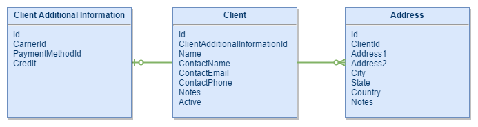
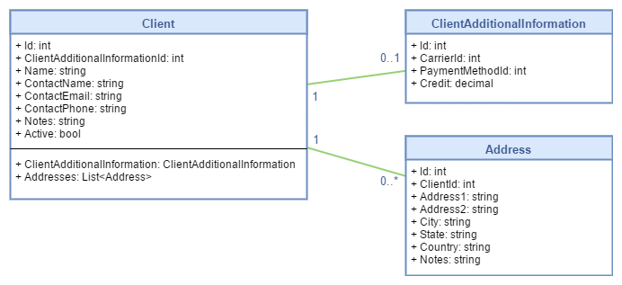

Getting Started
In this document we'll go over a basic overview of the ORM, how to use it, configure it and access the database. First we'll see how to do it manually, so you can understand how the ORM works, and later we'll show how to use the DbFirst tool and the Code Generator to scaffold all the code for you.
Existing Database
Let's start and use an existing database. We distribute Paradigm ORM with a DbFirst tool that will assist you with the process, but we think pointing out the manual process first will help you understand how all the pieces click together.
Database Structure
For this example we'll use 3 tables:
- Client
- Client Additional Information
Address
This is just an explanatory structure, and by no means should be taken as an optimal database model. We basically want a client entity with a list of addresses, and an optional information table.

/* CLIENT TABLE */
CREATE TABLE IF NOT EXISTS `testdb`.`client` (
`Id` INT NOT NULL AUTO_INCREMENT,
`ClientAdditionalInformationId` INT NOT NULL,
`Name` NVARCHAR(200) NOT NULL,
`ContactName` NVARCHAR(200),
`ContactEmail` NVARCHAR(200),
`ContactPhone` NVARCHAR(200) NULL,
`Notes` TEXT,
`Active` BOOLEAN NOT NULL,
CONSTRAINT `PK_Client` PRIMARY KEY (`Id` ASC),
CONSTRAINT `UX_Client_Name` UNIQUE (`Name`),
CONSTRAINT `FK_Client_ClientAdditionalInformation`
FOREIGN KEY (`ClientAdditionalInformationId`)
REFERENCES `clientadditionalinformation` (`Id`),
) ENGINE=INNODB;
/* CLIENT ADDITIONAL INFO TABLE */
CREATE TABLE IF NOT EXISTS `testdb`.`clientadditionalinformation` (
`Id` INT NOT NULL AUTO_INCREMENT,
`CarrierId` INT NOT NULL,
`PaymentMethodId` INT NOT NULL,
`Credit` DECIMAL(20, 9) NOT NULL DEFAULT 0,
CONSTRAINT `PK_ClientAdditionalInformation` PRIMARY KEY (`Id` ASC),
CONSTRAINT `FK_ClientAdditionalInformation_CarrierId`
FOREIGN KEY (`CarrierId`) REFERENCES `carrier` (`Id`),
CONSTRAINT `FK_ClientAdditionalInformation_PaymentMethod`
FOREIGN KEY (`PaymentMethodId`) REFERENCES `paymentmethod` (`Id`)
) ENGINE=INNODB;
/* ADDRESS TABLE */
CREATE TABLE IF NOT EXISTS `testdb`.`address` (
`Id` INT AUTO_INCREMENT NOT NULL,
`ClientId` INT NOT NULL,
`Address1` NVARCHAR(200) NOT NULL,
`Address2` NVARCHAR(200) NULL,
`City` NVARCHAR(200) NOT NULL,
`State` NVARCHAR(200) NULL,
`Country` NVARCHAR(200) NULL,
`Notes` TEXT NULL,
CONSTRAINT `PK_Address` PRIMARY KEY (`Id` ASC),
CONSTRAINT `FK_Address_ClientId` FOREIGN KEY (`ClientId`)
REFERENCES `client` (`Id`)
) ENGINE=INNODB;
.NET Mappings
The first step we need to take in order to retrieve data from the database, is determining how the table will be mapped to a .NET type. Paradigm ORM already provides a group of attributes for that purpose, and we're gonna decorate our classes with them. There are two ways to provide these mappings: either by decorating the class itself, or by decorating another class or interface. In the second case, we'll need to also decorate the class that we will use with the reference to the other class (where the mapping is). If this doesn't make sense now, it will surely do as we go over the examples.
Mapping the class
We'll use the TableAttribute to indicate that the classes will be mapped to specific database tables.
Tip
If your database allows catalogs and schemas, and you want to separate distinct sectors of your app using different schemas, you can also provide them as parameters.
Tip
If the table and class name are equals, including upper and lower case characters, then the name parameter is not mandatory. You can just leave the [Table] attribute empty. This is ideal when working with SQL Server and you don't plan to use different schemas.
For columns, we have various attributes we can use to provide information about the mapping:
| Attribute | Description |
|---|---|
| ColumnAttribute | Indicates that the property will be mapped to a table or view column. If the column and property names are equal, the name can be ignored. When working with SQL Server, the column type should be provided as well. |
| IdentityAttribute | Indicates that the property will be mapped to an identity column. Identity columns are auto numeric, auto increment properties (SQL Server: IDENTITY, MySql: AUTO_INCREMENT, PostgreSql: SERIAL). Each database refers to them in different ways, and the implementation details may vary. The ORM just need to know if it's responsible for the value, or can ignore it. |
| PrimaryKeyAttribute | Indicates that the column is part of the primary key. |
| ForeignKeyAttribute | Indicates that the column is part of a foreign key to another table. |
| UniqueKeyAttribute | Indicates that the column is part of a unique constraint. |
| SizeAttribute | If the column is a sizeable type like VARCHAR, BINARY, etc, this attribute allows to provide the size for the column. |
| NumericAttribute | If the column type is a numeric type, this attribute provides a description for the numeric scale and precision. |
| RangeAttribute | If the column type has a minimum and maximum value, this attribute allows to provide the range values. This is helpful for numbers and dates. For example, each database handle date ranges differently. |
| NotNullableAttribute | Indicates if the column does not allows null values. |
| NavigationAttribute | The NavigationAttribute does not map to a column. It provides a way to indicate that the property references a relation to another entity, and should be taken in account when retrieving or storing data. |
Ok, so let's go back to the client example we saw earlier. The client model should have two navigation relationships:
- Addresses (1-Many)
ClientAdditionalInformation (1-1)
These properties will be called navigation properties from now on, and will be used to navigate between the aggregate root and the other entities.
Note
Paradigm ORM was designed with a DDD (Domain-Driven Design) in mind, even if purposefully not built to be perfect or include every scenario possible. Having this in mind, when working with data models the main entity in the domain hierarchy will be called the aggregate root.

[Table("client")]
public class Client
{
#region Properties
[Column(Type = "int"), Identity, NotNullable, PrimaryKey]
public int Id { get; set; }
[Column(Type = "int"), NotNullable]
public int ClientAdditionalInformationId { get; set; }
[Column(Type = "varchar"), NotNullable, Size(200)]
public string Name { get; set; }
[Column(Type = "varchar"), Size(200)]
public string ContactName { get; set; }
[Column(Type = "varchar"), Size(200)]
public string ContactEmail { get; set; }
[Column(Type = "varchar"), Size(200)]
public string ContactPhone { get; set; }
[Column(Type = "text"), Size(65535)]
public string Notes { get; set; }
[Column(Type = "boolean"), NotNullable]
public bool Active { get; set; }
[Navigation(typeof(ClientAdditionalInformation), "ClientAdditionalInformationId", "Id")]
public ClientAdditionalInformation ClientAdditionalInformation { get; set; }
[Navigation(typeof(Address), "Id", "ClientId")]
public List<Address> Addresses { get; set; }
#endregion
}
[Table("clientadditionalinformation")]
public class ClientAdditionalInformation
{
#region Properties
[Column(Type = "int"), Identity, NotNullable, PrimaryKey]
public int Id { get; set; }
[Column(Type = "int"), NotNullable]
public int CarrierId { get; set; }
[Column(Type = "int"), NotNullable]
public int PaymentMethodId { get; set; }
[Column(Type = "decimal"), NotNullable, Numeric(20, 9)]
public decimal Credit { get; set; }
#endregion
}
[Table("address")]
public class Address
{
#region Properties
[Column(Type = "int"), Identity, NotNullable, PrimaryKey]
public int Id { get; set; }
[Column(Type = "int"), NotNullable]
public int ClientId { get; set; }
[Column(Type = "varchar"), NotNullable, Size(200)]
public string Address1 { get; set; }
[Column(Type = "varchar"), Size(200)]
public string Address2 { get; set; }
[Column(Type = "varchar"), NotNullable, Size(200)]
public string City { get; set; }
[Column(Type = "varchar"), Size(200)]
public string State { get; set; }
[Column(Type = "varchar"), Size(200)]
public string Country { get; set; }
#endregion
}
Ok, so here we managed to create three classes, and successfully map the classes to the the table schema. It's a pretty straightforward process: it wasn't that painful, was it? But if you are a little bit like us, you're probably wondering whether having all that information in your domain may bring problems down the road, while also visually contaminating your code. Well, we feel you: we also believe having all that mapping information inside your domain classes, DTOs and entities is not the greatest idea, even moreso if you are deploying a medium to large sized system. So, as we mentioned at the begining of this section, we included a way for you to separate mapping information from your classes, leaving your domain clean, beautiful and database agnostic (at least in theory). To do this, we can use the TableTypeAttribute to reference another type, and tell the ORM to extract mapping information from that other class or interface. If we decide to do that, our sample code would end up looking something like this:
[Table("client")]
public interface IClientTable
{
#region Properties
[Column(Type = "int"), Identity, NotNullable, PrimaryKey]
int Id { get; }
[Column(Type = "int"), NotNullable]
int ClientAdditionalInformationId { get; }
[Column(Type = "varchar"), NotNullable, Size(200)]
string Name { get; }
[Column(Type = "varchar"), Size(200)]
string ContactName { get; }
[Column(Type = "varchar"), Size(200)]
string ContactEmail { get; }
[Column(Type = "varchar"), Size(200)]
string ContactPhone { get; }
[Column(Type = "text"), Size(65535)]
string Notes { get; }
[Column(Type = "boolean"), NotNullable]
bool Active { get; }
#endregion
}
...
[TableType(typeof(IClientTable))]
public class Client: IClientTable
{
#region Properties
public int Id { get; set; }
public int ClientAdditionalInformationId { get; set; }
public string Name { get; set; }
public string ContactName { get; set; }
public string ContactEmail { get; set; }
public string ContactPhone { get; set; }
public string Notes { get; set; }
public bool Active { get; set; }
[Navigation(typeof(ClientAdditionalInformation), "ClientAdditionalInformationId", "Id")]
public ClientAdditionalInformation ClientAdditionalInformation { get; set; }
[Navigation(typeof(Address), "Id", "ClientId")]
public List<Address> Addresses { get; set; }
#endregion
}
Note
You probably noticed that we didn't declare the navigation properties and the [Navigation] attributes in the table interface; we did that in the domain class. This seems to go against what we are talking here, but there is a design reason behind that decision. If you ever want to place your table interfaces in a different assembly, you'll need to reference them from the domain assembly, and that will produce a circular dependency. Also, the navigation mapping is not a database mapping per se, but part of the domain design, so it's ok that the table doesn't know how a specific domain will be mapped.
Important
There are multiple ways you can place your mapping attributes. You can place them on base classes, base interfaces, referenced classes, referenced base classes and interfaces, etc. And also, you can spread them between multiple classes. While that's not recommended, it can come in handy if you need to translate from a relational structure to a class hierarchy. See tip below for further details on this situation.
Tip
Suppose all your main transaction tables require audit information like CreationUserId, CreationDate, ModificationUserId and ModificationDate. Instead of mapping those fields on every single class, you could create an interface IAuditable with those fields, and their respective mappings. You can later implement that interface in each transaction class. Or even better, do a base abstract class with all the information, and just extend the functionalty. This is possible due to the flexibility of TableTypeDescriptor to create the mapping model, and allow complex hierarchy trees that will later be translated to the relational logic of the database.
Tip
The ORM allows navigation properties with multiple primary / foreign keys. If you need to navigate using more than just one primary / foreign key, you need to add more
NavigationAttributeto the navigation property:
[Navigation(typeof(SomeClass), "FirstSourceKey", "FirstReferencedKey")]
[Navigation(typeof(SomeClass), "SecondSourceKey", "SecondReferencedKey")]
public SomeClass NavigationProperty { get; get; }
Now that we have some entities to work with, we can move on to retrieving and storing data.
Accessing the database
The first thing we need to do next is to establish a connection to the database. We'll utilize the DatabaseConnector to establish the connection.
using(var connector = new MySqlDatabaseConnector("Server=localhost;Database=testdb;Uid=root;Password=*****")
{
// opens the connection.
connector.Open();
// [Query execution code here]
// closes the connection.
connector.Close();
}
Ok, so we have the mappings, and an open connection to the database: we are ready to run some queries! All the ORM infrastructure is built around the System.Data interfaces, so we're going to start with ado-like queries, and move on to more advanced, and easier, queries using other aspects of Paradigm ORM.
// creates a new database command.
using(var command = connector.CreateCommand())
{
// configures the command type and query.
command.CommandText = "SELECT * FROM Client";
command.CommandType = CommandType.Text;
// opens a reading operation to the database.
using(var reader = command.ExecuteReader())
{
// maps the results from database to the known type.
var clients = new DatabaseReaderMapper<Client>().Map(reader);
}
}
The code above is mostly self explanatory. It opens a connection to the database, creates a command, and then executes the query. Using the @Paradigm.ORM.Data.Mappers.Generic.DatabaseReaderMapper class, it gets the resulting clients.
In the example above we went to the database and back, but it's still a good deal of code just to get data: it should be easier and cleaner to do such a standard task. We have several other ways to write this down, but internally this is basically what is happening behind the scenes.
We'll see how to translate the code to make it easier to read. There are many ways to do this: the one you choose will depend on the situation and what you need to accomplish.
Using Extension Methods
The interface @Paradigm.ORM.Data.Database.IDatabaseConnector has various extension methods available for all the different database types that can help you with repetitive tasks, and is also in charge of disposing every disposable object for you. In particular, we want to use the executing extensions:
- ExecuteReader
- ExecuteNonQuery
- ExecuteScalar
Note
All the methods enumerated above have sync and async implementations. In general, most of the methods are both sync and async. We strongly recommend to use async whenever you can.
connector.ExecuteReader("SELECT * FROM Client", reader =>
{
var clients = new DatabaseReaderMapper<Client>().Map(reader);
});
Using Queries
There are also a set of objects that can handle data retrieval operations for you, althought they are better suited for code re-use.
| Query | Description |
|---|---|
| @Paradigm.ORM.Data.Querying.Query | Represents a SELECT * Table for a given type. You can provide a WHERE clause. All columns will be retrieved. |
| @Paradigm.ORM.Data.Querying.CustomQuery | Represents a custom SELECT statement, where the user must provide the sentence. The selected columns must be configured (mapped) in the entity. |
Query
using(var query = new Query<Client>(connector))
{
var clients = query.Execute();
}
Custom Query
using(var query = new CustomQuery<Client>(connector, $"SELECT `{nameof(Client.Id)}`, `{nameof(Client.Name)}` FROM `client`"))
{
var clients = query.Execute();
}
Extensions
There are also extension methods to execute queries, but have in mind that you'll be creating a query object, and a TableTypeDescriptor just for one operation:
var clients = connector.Query<Client>();
Summary Summarizing: we saw how to configure the mapping between tables and types, how to open a connection and how to map and retrieve data. But there is more to working with data than just retrieving it from the data source, and even for data retrieval there is another option that will include relationships with other entities. We'll explore this option in the next point.
CRUD Operations
In this point we'll cover how to store and delete data. In order to do that, will see how the IDatabaseAccess operates, and what happens when you have relationships between entities.
Database Access
The DatabaseAccess class handles CRUD operations for a given type, including the relationships with other types. The DatabaseAccess object is one of the cornerstones of Paradigm ORM. If you want to see more:
Warning
- (1 To 1) is fully supported.
- (1 To Many) is fully supported.
- (Many To Many) is NOT supported.
Internally, the database access will create an instance of a @Paradigm.ORM.Data.ITableTypeDescriptor, a IDatabaseReaderMapper and a ICommandBuilderManager (other objects as well) and with them will operate the different data access operations. You can think of it as a Entity Framework DatabaseContext with only one publicly exposed DbSet. Internally they do completely different things, but the role for the end user is somewhat similar.
So, let's see how to use this class to do more interesting things than just retrieving data from a table:
Inserting Data
Let's create a new client, populate it with some addresses and store it into our database.
using(var databaseAccess = new DatabaseAccess<Client>())
{
var client = new Client
{
Name = "JS Logistics & Transport",
ContactName = "John Smith",
ContactEmail = "jsmith@jslt.com",
ContactPhone = "555-5452354",
ClientAdditionalInformation = new ClientAdditionalInformation
{
CarrierId = 1,
PaymentMethodId = 1
Credit = new Decimal(100.34),
},
Addresses = new List<Address>()
{
new Address
{
Address1 = "10034 Wallyswood ST",
City = "Texas City",
State = "Texas",
Country "USA"
},
new Address
{
Address1 = "14012 Vineyard BLVD",
City = "Miami",
State = "Florida",
Country "USA"
}
}
};
databaseAccess.Insert(client);
}
After executing this code, you should find one new client, one new client additional information and two new addresses inserted in your tables.
As you can see, it's a pretty straightforward process. As we'll find out later, the update and delete operations are pretty much the same. But it's important to note that the DatabaseAccess not only inserts the main class, but also inserts the childs and resolves the id of the newly created entites.
Important
If you are an Entity Framework user, you'll probably notice the lack of SaveChanges or other form of data commitment. Paradigm ORM commits immediately, so if you want to replicate Entity Framework's way of doing things, you will need to use transactions.
Tip
If you want to insert more than one entity, please use the Insert(IEnumerable{TEntity}) method. The ORM uses command batching to optimize bulk operations, and reduce roundtrips to the database.
Selecting Data
Selecting data from the database is also really simple, so lets retrieve the client we inserted in the previous point:
using(var databaseAccess = new DatabaseAccess<Client>(connector))
{
var clients = databaseAccess.Select();
}
We should have our client, additional information and addresses in the client collection.
Note
The difference between the DatabaseAccess.Select and previous selection methods, is that this method will retrieve the client and all its related entities. So it's better suited for working with complex domain models.
Updating Data
Let's open the client, and change some of the fields:
using(var databaseAccess = new DatabaseAccess<Client>())
{
var client = databaseAccess
.Select($"{nameof(Client.Name)}='JS Logistics & Transport'")
.FirstOrDefault();
if (client == null)
throw new Exception("Client not found");
client.Name = "JS Systems";
client.Addresses[0].State = "TX";
client.Addresses[1].State = "FL";
databaseAccess.Update(client);
}
The client, additional information and addresses should have their new values updated. Like the insert before, the update runs inmediately.
Note
To select the desired client, we're using the select method, and passing a where clause. As we are aiming for velocity, there are no plans to add LINQ and IQuery support in the short run, as EF does. Also worth mentioning, Paradigm ORM supports Stored Procedures. If the query is sufficiently complex, we suggest you target a view or a stored procedure instead.
Tip
If you have the entity id, the DatabaseAccess ships with a method to retrieve by Id: SelectOne.
Deleting Data
Let's open the client, and change some of the fields:
using(var databaseAccess = new DatabaseAccess<Client>())
{
databaseAccess.Delete(databaseAccess.Select());
}
All the clients and their respective related entities should be deleted from your database.
Stored Procedures
One of the reasons behind our efforts with Paradigm ORM was to make stored procedures first class citizens. After years working with enterprise applications, using Entity Framework as our main database access, we always had to migrate one by one all the queries and complex procedures to the database. And that makes sense, Why would you move data from one server to another in order to process data when the first server is more capable to handle it? I know, there are other concerns here, like code maintenance, modularity, etc; but either way you're breaking all that taking the data out of its context to search and modify it, and that's never good for perfomance. So, as certain hippie 2000 years ago said:
Render unto Caesar the things that are Caesar's, and unto God the things that are God's
The ORM supports 3 types of stored procedures. Like commands, you have reading operations, scalar operations and non queries. Each has its own class, and knows how to operate and do the call.
- ScalarStoredProcedure<TParameters, TResult>
- NonQueryStoredProcedure<TParameters>
- ReaderStoredProcedure<TParameters, TResult>
- ReaderStoredProcedure<TParameters, TResult1, TResult2>
- ReaderStoredProcedure<TParameters, TResult1, TResult2, TResult3>
- ReaderStoredProcedure<TParameters, TResult1, TResult2, TResult3, TResult4>
- ReaderStoredProcedure<TParameters, TResult1, TResult2, TResult3, TResult4, TResult5>
- ReaderStoredProcedure<TParameters, TResult1, TResult2, TResult3, TResult4, TResult5, TResult6>
- ReaderStoredProcedure<TParameters, TResult1, TResult2, TResult3, TResult4, TResult5, TResult6, TResult7>
- ReaderStoredProcedure<TParameters, TResult1, TResult2, TResult3, TResult4, TResult5, TResult6, TResult7, TResult8>
All the Procedure types expect a generic argument, representing a parameter class. We'll se what a stored procedure parameter is in the next point.
Tip
For data reading operations, there are 8 classes, all generic, that differs only in the amount of result sets. The ORM supports up to 8 different types of results from a stored procedure. If you have to return more than that, you can treat them differently, or do your own caller.
Parameters
Stored Procedure Parameters are regular .NET types containing the stored procedure individual parameters. Imagine an stored procedure as follows:
CREATE STORED PROCEDURE `testdb`.`SearchClients` (
`ClientName` VARCHAR(200),
`ContactName` VARCHAR(200),
`CreditFrom` DECIMAL(20, 9),
`CreditTo` DECIMAL(20, 9)
)
BEGIN
...
END;
Instead of sending a list of parameters in the execute method, we prefer to use an object; some kind of DTO that can traverse the different layers of the application. If the firm of the stored procedure changes, you just need to change the parameter object instead of all the methods in the method chain (controller, provider, domain, repository, database acccess, etc).
Like table-mapped types, the user must provide some minimal mapping information for the ORM. This operates exactly as you'd expect after reading how table and types are mapped. The stored procedure classes will use these mapping descriptions to execute and map the results.
If you want to provide the map information inside the class directly, you can use RoutineAttribute or if you prefer to use an interface and leave the object clean, you can use RoutineTypeAttribute. The individual parameters can be mapped with the ParameterAttribute, but you can also you SizeAttribute and NumericAttribute to provide more information about the parameters.
Important
As for today, the ORM does not have a way to send table type arguments to a stored procedure.
Let's see an example using the previous stored procedure:
[Routine("SearchClients")]
public class SearchClientsParameters
{
[Parameter("ClientName", "varchar", true), Size(200)]
public string ClientName { get; set; }
[Parameter("ContactName", "varchar", true), Size(200)]
public string ContactName { get; set; }
[Parameter("CreditFrom", "decimal", true), Numeric(20, 9)]
public decimal CreditFrom { get; set; }
[Parameter("CreditTo", "decimal", true), Numeric(20, 9)]
public decimal CreditTo { get; set; }
}
Tip
Like the other attributes, if the parameter and property names are equals, you can ignore the rest of the parameters.
So you just have to provide the stored procedure name, and the parameters mapping information. That's fine, but how do you execute that stored procedure? All the 3 types have an Execute and ExecuteAsync method, that will do the magic. Let's see an example for each one of the types.
Reader
Let's see how to execute the search clients procedure:
// the stored procedure will return a Tuple<List<Client>, List<Address>>
var results = new ReaderStoredProcedure<SearchClientsParameters, Client, ClientAdditionalInformation, Address>(connector).Execute(parameters);
foreach (var client in results.Item1)
{
client.ClientAdditionalInformation = results.Item2.Find(x => x.Id == client.ClientAdditionalInformationId);
client.Addresses = results.Item3.FindAll(x => x.ClientId == client.Id);
}
In this case, our search procedure is searching for clients and their related entities, and it's returning three result sets. We want this call to be transparent, like a Select using the DatabaseAccess. So for each client in the first result set, we'll find all the addresses owned by this client and assign them to it.
Working with the other two types of stored procedures is similar if not easier, because you don't have result sets but a scalar or no return at all.
Tip
If you're planning on using dependency injection, all 3 types have a constructor accepting a IServiceProvider instance as parameter. Internally, the procedure will use the provider to resolve the database connector, mappers or any other required object.
Scalar
Let's execute a stored procedure to retrieve the client id:
var id = new ScalarStoredProcedure<GetClientIdParameters, int>(connector).Execute();
Non Query
Let's execute a stored procedure that saves a client:
new NonQueryStoredProcedure<SaveClientParameters>(connector).Execute();